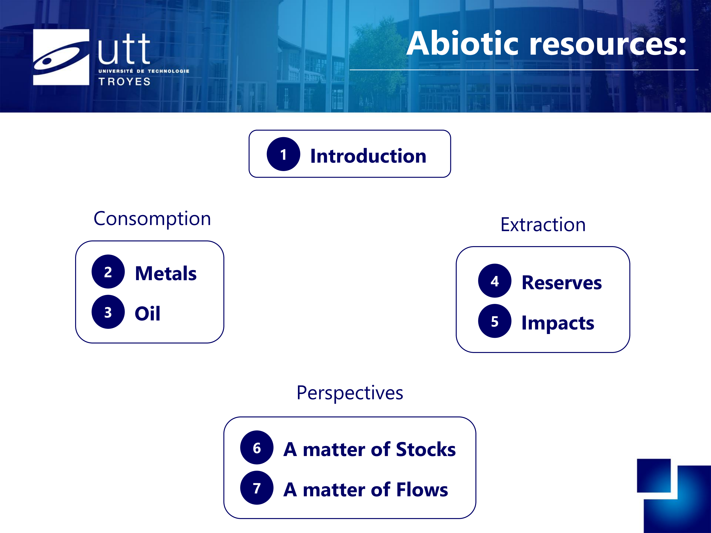
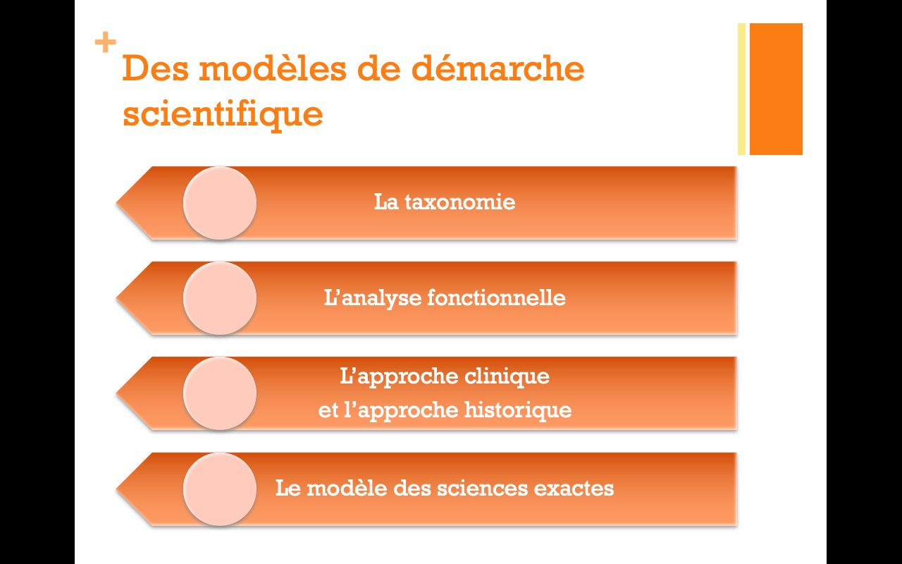

-
Publications
In preparation:
- Robineau P., Guendouz Z., Sahel A., Boltoeva M., Arbor N., Quaranta G., and Kozderka M. 2026. Prospective life cycle assessment for radioactive waste management: the case of VLLW recycling in France. Targeted journals: Journal of Cleaner Production or Journal of Industrial Ecology.
- Robineau P., Beerlage F., Salim N. Boltoeva M., Arbor N., Kettner M. and Quaranta G. 2025. Decentralized H2-based energy systems from a TEA-LCA perspective: the case of Offenburg municipality transition plan. Targeted journals: Journal of Cleaner Production or Journal of Industrial Ecology.
- Robineau P., Boltoeva M., Arbor N. and Quaranta G. 2025. Shifting to prospective and dynamic LCA for spread over time industrial projects: the case of the Fessenheim NPP decommissioning. Targeted journals: Journal of Cleaner Production or Journal of Industrial Ecology.
- Broussier A., Muhammad M. H., Hmina A., Robineau P., Le Cunff L., Vezy C., Deturche R., Kevorkian A., Blaize S., Couteau C. Integration of a single photon source with a photonic waveguide. Targeted journal: ACS Photonics.
Publications in peer reviewed international journals
- Robineau, P., Boltoeva, M., Arbor, N. and Quaranta, G., 2025. Radiological Impact of the Fessenheim Nuclear Power Plant Decommissioning Through Prospective Life-Cycle and Risk Assessment Approaches. Science of The Total Environment. Vol. 974, 179200. DOI.
- IGUIDER, M., Robineau, P., Kozderka, M., Boltoeva, M. and Quaranta, G., 2024. Life cycle assessment of an upcoming nuclear power plant decommissioning: the Fessenheim case study from public data. The International Journal of Life Cycle Assessment. Vol. 29, n° 7, p. 1229-1245. DOI.
- Robineau, P., Béal J., Pons, T., Jaffiol, R. and Vézy, C., 2023. Micropatterning of Quantum Dots for Biofunctionalization and Nanoimaging. ACS Applied Nano Materials. 6 (10), 8444-8452. DOI.
Invited communications
- Robineau, P., Arbor, N., Labat, A., Boltoeva, M. et Quaranta, Q., 2024. CO2InnO - Laboratoire vivant pour une région d'innonation pilote neutre en CO2 - Développement de solutions énergétiques et de mobilité. Séminaire scientifique de l'OHM Fessenheim. 2024/11/29. Strasbourg, France. URL.
Oral communications at conferences
International
- Robineau, P., Jaffiol, R., PONS, T. and Vézy, C., 2024. Quantum dots micropatterning: Towards biofonctionalization and nano-imaging. 68th Biophysical Society Annual Meeting. 2024/02/10-14. Philadelphia, Pennsylvania. URL.
National
- Robineau, P., Boltoeva, M., Arbor, N. and Quaranta, G., 2024. Radiological impact of the Fessenheim NPP decommissioning via Life-Cycle Assessment framework. R3C 2024 - 3e Rencontres Rayonnement Radiochimie. 2024/06/18-20. Nîmes, France. URL.
- Robineau, P., Jaffiol, R. and Vézy, C., 2022. Micropatterning of quantum dots monolayer for FRET nano-imaging of cell adhesion. Rencontres Jeunes du C'Nano EST 2022. 2022/03/01. URL.
Poster communications at conferences
International
- Robineau, P., Boltoeva, M., Arbor, N. and Quaranta, G., 2024. From midpoint to endpoint level radiological impacts on human health in prospective LCA: leveraging open source solutions to investigate the Fessenheim NPP decommissioning. Brightcon 2024. 2024/09/23-27. Hambourg, Germany. URL.
- Robineau, P., Boltoeva, M., Arbor, N. and Quaranta, G., 2024. Towards a techno-economic and life-cycle assessment simulation tool for H2 / Natural gas CHP-based systems to help local energy policies. Brightcon 2024. 2024/09/23-27. Hambourg, Germany. URL.
- Robineau, P., Jaffiol, R., PONS, T. and Vézy, C., 2024. Quantum dots micropatterning: Towards biofonctionalization and nano-imaging. 68th Biophysical Society Annual Meeting. 2024/02/10-14. Philadelphia, Pennsylvania.
- Robineau, P., Jaffiol, R. and Vézy, C., 2022. Micropatterning of quantum dots monolayer for quantitative FRET-based imaging. Focus on Microscopy 2022. 2022/04/10-13. Online due to Covid Pandemic. URL.
- Robineau, P., Jaffiol, R. and Vézy, C., 2022. Micropatterning of quantum dots monolayer for quantitative FRET-based imaging of cell adhesion dynamics. Nanoscale 2022. 2022/04/06-08. Paris, France. URL.
National
- Robineau, P., Boltoeva, M., Arbor, N. and Quaranta, G., 2024. A techno-economic and life-cycle assessment simulation tool for H2 / Natural gas CHP-based systems to help local energy policies. Journée plénière de l'hydrogène à l'Université de Strasbourg. 2024/06/17. Strasbourg, France. URL
- Robineau, P., Jaffiol, R. and Vézy, C., 2022. Micropatterning of quantum dots monolayer for quantitative FRET-based imaging of cell adhesion dynamics. AQV Days: quantitative approaches to living systems. 2022/01/19-21. Paris, France. URL.
Laboratory Seminars
- Robineau, P. Analyse de cycle de vie pour la transition énergétique dans le Rhin supérieur: prendre en charge l'ancien, anticiper le nouveau. Séminaires du LASIRE. 2025/06/16. Lille, France.
- Robineau, P. Nanosciences et soutenabilité : allers-retours. Séminaires de l'IPCMS. 2024/11/27. Strasbourg, France. URL.
- Robineau, P. Quantum dots Micropatterning for Biofunctionalization & Imaging. Séminaires de l'IPHC. 2023/12/14. Strasbourg, France. URL.
- Robineau, P. Modèle HSN : une représentation des interactions Humain·e·s – Systèmes techniques – Nature. Formation INSA / ET-LIOS / S.mart. 2022/06/10. Lyon, France. URL.
- Robineau, P. Micropatterning of quantum dots monolayer for Cell adhesion studies. L2n day 2021. 2021/12/10.
-
PhD Thesis
My PhD project started in October 2019 under the supervision of Cyrille Vézy and Rodolphe Jaffiol. It was successufully defended in December 2022. This PhD was conducted in the L2n (Light, nanomaterials, nanotechnology) laboratory at the Charles Delaunay Institute of the University of Technology of Troyes. Its aim was to further refine the tools and methods of NEF imaging: a synthetic presentation is given here, and full text of the manuscript (french) is available here or here.

-

Teaching
As a teacher assistant, I overseed pratical works in physics & chemistry in 2020-2021 at the University of Technology of Troyes. The covert topics were broad, from Classical Mechanics to Structural properties of Matter and Light-Matter interactions.
Experimentations could indeed consist on the formal and numerical analysis of the trajectory of a canonball or the oscillation of a spring, to retrieve informations on the initial force applied to the canonball by the canon, or the stiffness of the spring. But they could also be more elaborate, like the use of a photoelectric cell to verify the value of Planck's constant in the corpuscular interpretation of light, the recreation of the Thompson experiment to find the electron mass, etc.
I also designed and was responsible to teach a section on abiotic resources, inside a general course on modeling Human-Systems-Nature interactions. We studied it from A to Z, looking at current consumption & production, and their future – using for that a sociotechnical perspective informed by social & environmental sciences. Slides available here. I also helped students adopt a systemic approach to their modeling with an introduction to its conceptual basis and methodology. Slides available here
-
Master and Engineer Degrees
Before my PhD, I had the opportunity to pass a double degree. The first one is an Engineer degree (Master level) on Materials: Technology & Economy with a specialization on Materials' Economy & Environnement, and the second one is a Master on Optics and Nanotechnology, both at the University of Technology of Troyes. I overloaded my courses with 1 minor : law in the context of entrepreuneurship.

-

Vulgarization
I already had the chance to give a conference on 2 occasions (2016 & 2017) during Barcamps organized by the UNG (UTT Net Group) association. Each time, it was a way for me to construct and share a reflexion based upon my lectures in Social Sciences & Humanities.
The first one was a presentation of R. Perron's conceptualization and discussion of his different models of scientific approach: taxonomy, functionnal analysis, clinical method, historical approach, and the so called "hard science method" (R. Perron, 2010). Slides available here.
The second one discussed the political and artistic interest of 2 strategies employed to construct the video games' legitimacy in the public discourse: either as a medium containing different forms of already legitimate arts, or as a medium defined as a specific form of art. Slides available here.